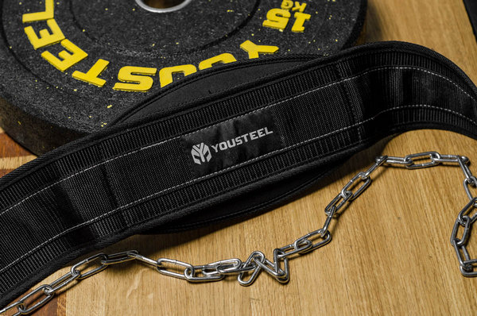
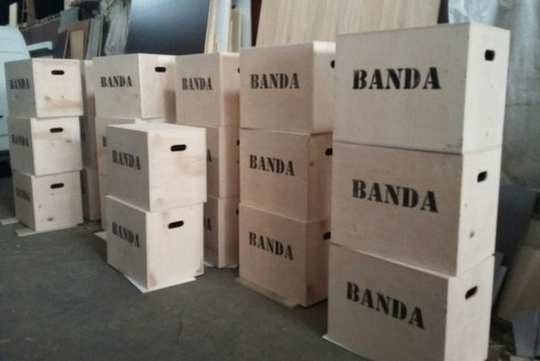
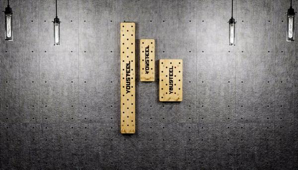
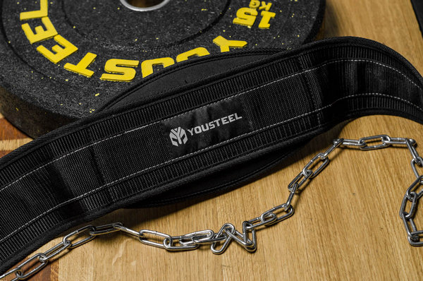
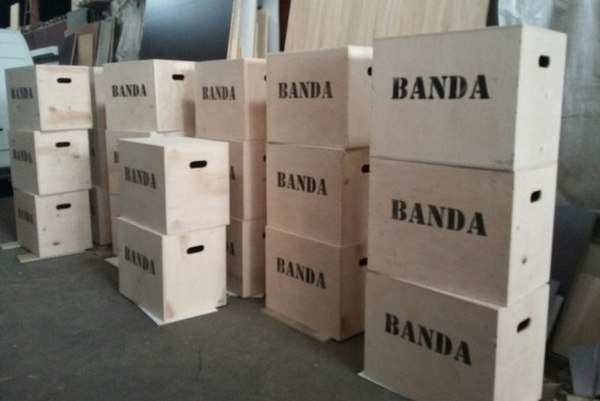
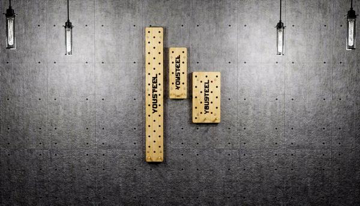
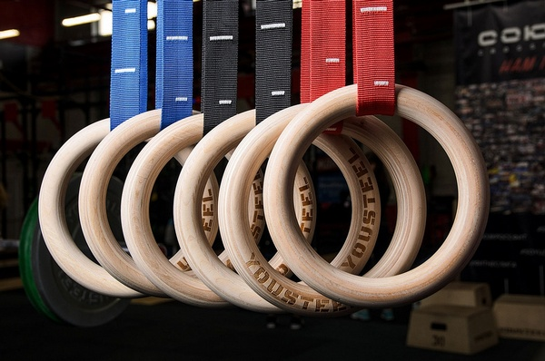
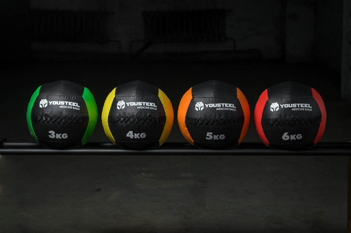
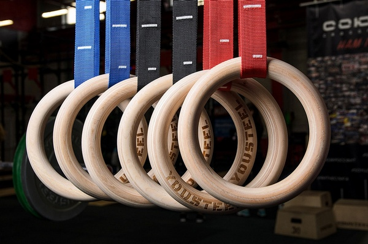
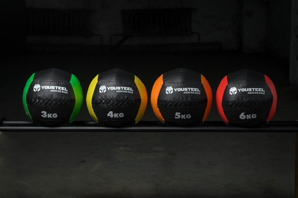

Прорезиненные диски для штанги — один из важнейших видов оборудования, используемого в функциональных тренировках. Металлические или обрезиненные варианты портят напольные покрытия, поэтому рациональным выбором для занятий со штангой, являются олимпийские каучуковые (бамперованные) блины.
Штанга является ключевым снарядом в тренировке Кроссфит-атлетов и тяжелоатлетов. Но все упражнения со штангой, так или иначе, связаны с ее падением на пол, что негативно влияет как на ресурс использования резиновых дисков, так и спортивного напольного покрытия. Решить эту проблему призваны бампированные диски для штанги.
Для производства дисков используется достаточно жесткая и плотная резина. В результате каучуковые диски очень долго не разрушаются при частых падениях и не деформируют резиновое покрытие пола.
Отверстие под втулку штанги – стальное, диаметром 50,4 мм. В результате диск стабильно держится на грифе.
Цвет дисков для штанги служит для их более легкой идентификации и соответствует стандартам тяжелой атлетики.
Идеально использовать эти блины для подготовки тяжелоатлетов, либо для тренировок в Crossfit залах.
Внешний диаметр всех дисков 450мм, внутренний 51мм.
Отклонение по весу не более 0,5%


 





 





_cr.png)